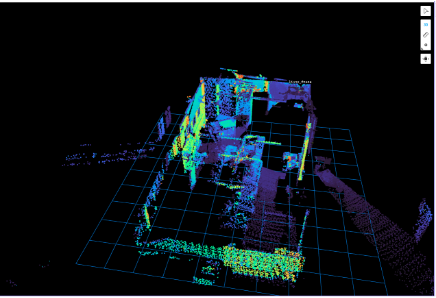
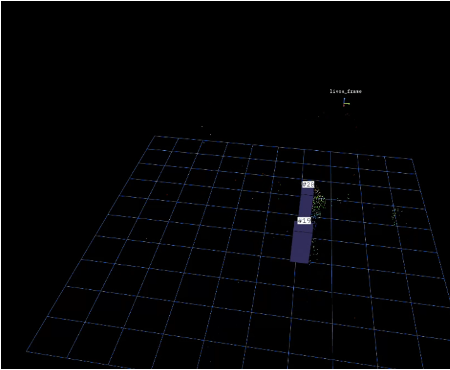

Overhead LiDAR sensing of social behavior in public space
Cameras in public space raise privacy problems; ground-level sensors lose people to occlusion. Ceiling-mounted LiDAR avoids both — which makes it an unusually good instrument for collecting the real-world pedestrian behavior data that social navigation research is short on. I co-developed a full pipeline around this idea: Livox MID-360 sensors on Jetson edge nodes, dual-LiDAR fusion via ICP calibration into a common frame, statistical background removal, clustering-based person detection, AB3DMOT-style multi-object tracking, and downstream encounter detection between tracked individuals.
The fused two-node system is verified end to end; full deployment in the Hunt Library congregation area is underway (July 2026). A finding worth knowing: pretrained autonomous-driving detectors transfer poorly to overhead point-cloud distributions, which is part of why this sensing geometry remains underexplored.